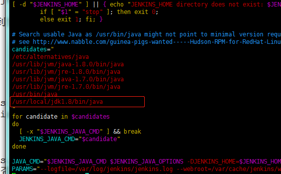
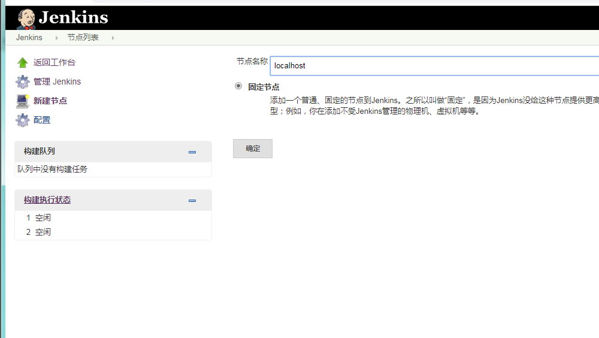
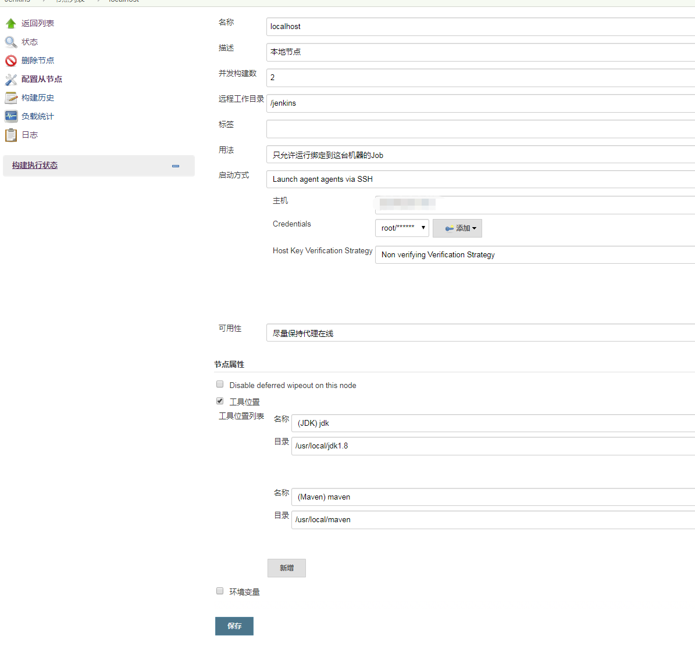
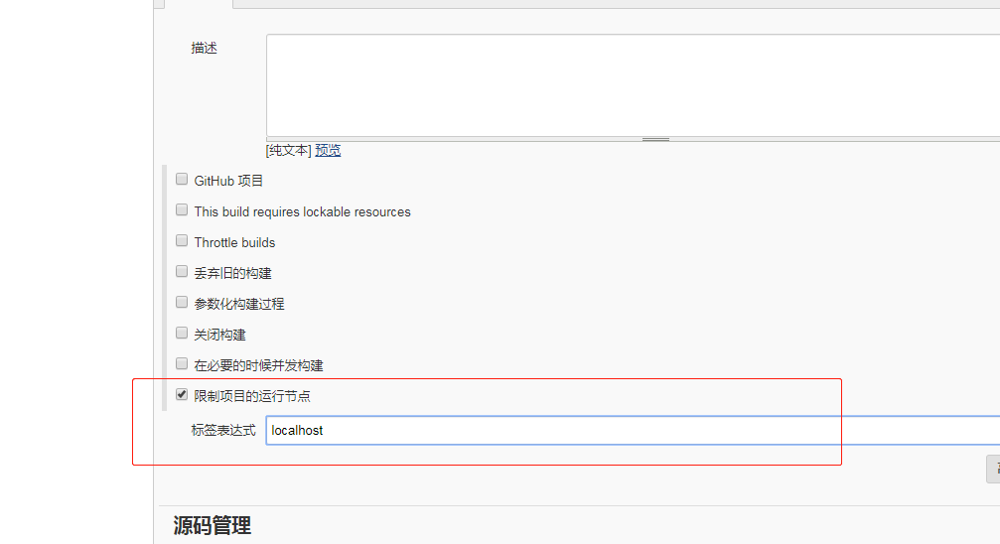
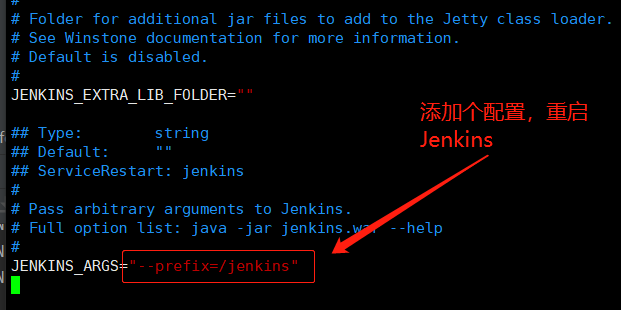

一、安装Jenkins
1、Red Hat/Fedora/CentOS 系列
命令如下：
|
如果您以前从Jenkins导入了密钥，那么“rpm –import”将失败，因为您已经有了密钥。请忽略它并继续前进。
安装失败
如果不能安装就到官网下载jenkis的rmp包，地址（https://pkg.jenkins.io/redhat/）
wget https://pkg.jenkins.io/redhat-stable/jenkins-2.164.3-1.1.noarch.rpm |
2、Debian/Ubuntu 系列
wget -q -O - https://pkg.jenkins.io/debian-stable/jenkins.io.key | sudo apt-key add - |
。。。。。
等等其他版本，下载安装都差不多，可参考官网：https://jenkins.io/zh/download/
二、配置Jenkins
# 修改配置文件 |
找到修改端口号，找到如下信息，改端口即可，不冲突可略过
JENKINS_PORT="8080" 此端口不冲突可以不修改 |
三、启动Jenkins
sudo service jenkins start/stop/restart |
- 可能出现的错误：
Job for jenkins.service failed because the control process exited with error code. See "systemctl status jenkins.service" and "journalctl -xe" for details- 检查自己的JDK是否安装
- 如果已经安装，检查 /etc/init.d/jenkins 文件（可通过vim编辑器修改）中JDK路径是否与本地路径一致，不一致则将JDK的正确路径加入。


- Jenkins 的根目录为：
/var/lib/jenkins/ - Jenkins 的工作目录为:
/var/lib/jenkins/workspace/ - 如果出现权限问题，可以修改：
/etc/sysconfig/jenkins把JENKINS_USER改为root,如：JENKINS_USER="root"
四、节点配置
当你需要在其他服务器自动部署应用的时候，需要配置节点
不可能，需要部署应用的服务器都部署Jenkins
配置节点很简单，填写一下服务器的地址与用户名密码即可
首页 –> 系统管理–> 节点管理–> 新建节点

远程工作目录，顾名思义就是jenkins的部署的工作目录，可以自定义(存在这个目录就行)
工具位置，就是远程服务器的应用路径
远程服务器要安装Git,但是不需要在这里配路径
构建任务时，选择如下：限制项目运行节点为，远程节点名称即可。

- 其他的步骤和在本地节点配置的是一样的，不太明白可以看我-上一篇文章
五、Nginx 代理
- 一般可能使用nginx作为代理，但是不是使用
/而是用其他的路径代理jenkins,比如：/jenkins。 - 这样代理之后可能会出现静态资源是404，
- 所以需要修改配置
/etc/sysconfig/jenkins在最后面修改：JENKINS_ARGS="--prefix=/jenkins"

这样之后访问就不知
http://ip:port的格式，而是：http://ip:port/jenkins这样的。nginx代理配置如下：
location /jenkins {
proxy_pass http://localhost:8080/jenkins;
proxy_redirect off;
proxy_set_header Host $host;
proxy_set_header X-Real-IP $remote_addr;
proxy_set_header X-Forwarded-For $proxy_add_x_forwarded_for;
}这样子静态资源的路径就对应上了，如果直接用
/比较简单
六、卸载Jenkins
// rpm卸载 |
参考：